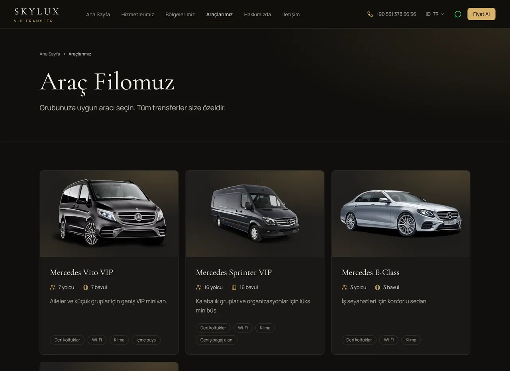
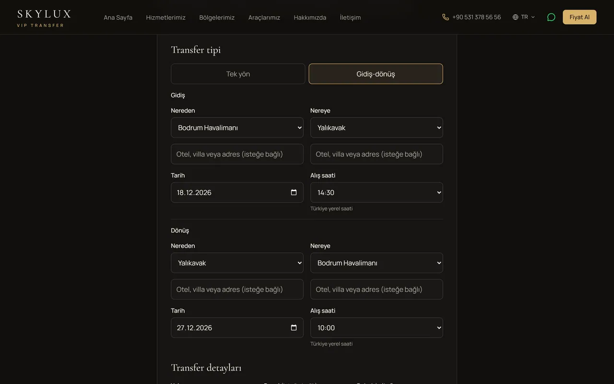

Web sitesi
Ziyaretçileri teklif talebine dönüştüren hızlı ve premium bir site.
- Arapça (sağdan sola) dahil 8 dil
- Tek yön ve gidiş-dönüş için teklif formu
- Talep numarasıyla WhatsApp'a geçiş
- Her telefonda hızlı, arama motorlarında kolay bulunur
Vaka çalışması · Müşteri projesi
Skylux VIP Transfer, Bodrum yarımadasında özel havalimanı ve şoförlü transfer hizmeti veriyor. Projeyi ilk gereksinimlerden canlıya kadar ben yürüttüm: ziyaretçileri teklif talebine dönüştüren 8 dilli bir web sitesi ve her talebi tamamlanmış bir transfere kadar taşıyan bir operasyon paneli.


Problem
Her rezervasyon bir WhatsApp mesajı ya da telefon görüşmesiyle başlıyordu. Ekibin, misafirler için rezervasyonu zorlaştırmadan işi tek bir yerden yönetmesi gerekiyordu.
Talepler WhatsApp, telefon ve Instagram'dan geliyordu; hepsinin toplandığı tek bir liste yoktu.
Hangi misafire hangi fiyatın ne zaman verildiği görülemiyordu.
Araç ve şoförler transferlere elle eşleştiriliyordu; çakışmalar kolayca gözden kaçıyordu.
Fiyatlar, rotalar ve site metinleri ekip tarafından güncellenemiyordu.
Yabancı misafirler siteyi kendi dillerinde okumak ve rezervasyonu kendi dillerinde yapmak istiyor.
Çözüm
Misafirler için bir web sitesi, ekip için bir operasyon paneli. İkisi aynı veritabanını kullanıyor; hiçbir bilgi iki kez girilmiyor.
Ziyaretçileri teklif talebine dönüştüren hızlı ve premium bir site.
İlk mesajdan tamamlanan transfere kadar ekibin ihtiyacı olan her şey.
Nasıl çalışıyor
Rezervasyon sürecinin tamamı panelden yürüyor ve her adım talebin geçmişine kaydediliyor.
Misafirler teklifi internetten ister; ekip WhatsApp ve telefonla gelen talepleri de aynı yere kaydeder.
Ekip teklifi hazırlar ve misafirin dilinde WhatsApp'tan gönderir.
Misafir onaylar ve rezervasyon kesinleşir.
Her transfer için bir araç ve şoför planlanır.
Misafir şoför bilgilerini alır; günün transferleri gösterge panelindedir.
Transfer kapatılır ve rezervasyon geçmişinde kalır.
Web sitesi
Telefondan gelen misafirler düşünülerek tasarlandı; Arapça sürümde düzen sağdan sola dönüyor. Büyütmek için ekran görüntülerine tıklayın.




Rolüm
Projeyi müşteriyle yapılan ilk görüşmelerden canlı sunucuya kadar uçtan uca ben yürüttüm.
Rezervasyon sürecini müşteriyle birlikte çıkardım ve 89 bölümlük bir ürün analiz dokümanı yazdım. Fiyatlandırma, rezervasyon durumları ve izinler gibi kritik konularda 17 kararı kayıt altına aldım.
Rezervasyon iş akışını ve hem misafirlerin hem ekibin kullandığı ekranları, müşterinin günlük işleyişine göre tasarladım.
İşi ilk prototipten canlıya kadar 13 kilometre taşında planlayıp teslim ettim. Her biri test edildi ve tek başına kullanılabilir durumdaydı.
Kritik akışları masaüstü ve mobilde çalışan otomatik testlerle güvenceye aldım; canlıya almadan önce panelde iki tur test yaptım.
Projeyi otomatik yedekleri olan, güvenli ve izlenen bir canlı ortama taşıdım. Kasım 2026'dan beri yayında.
Rakamlarla
Sıradaki proje
İşletmelerin süreçlerini ilk gereksinimden canlıya kadar çalışan ürünlere dönüştürmelerine yardımcı oluyorum.